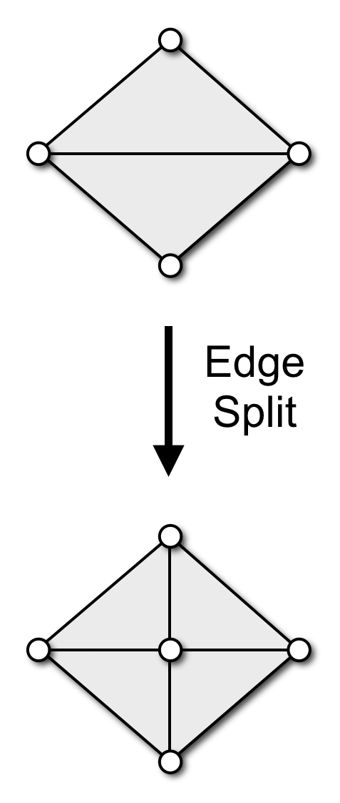
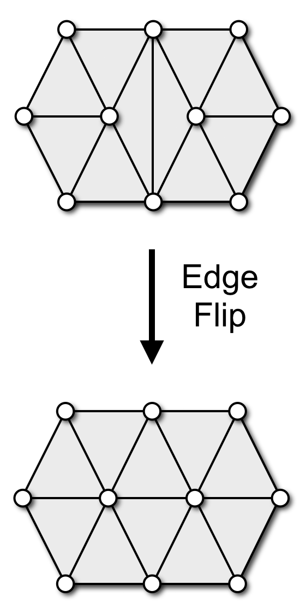
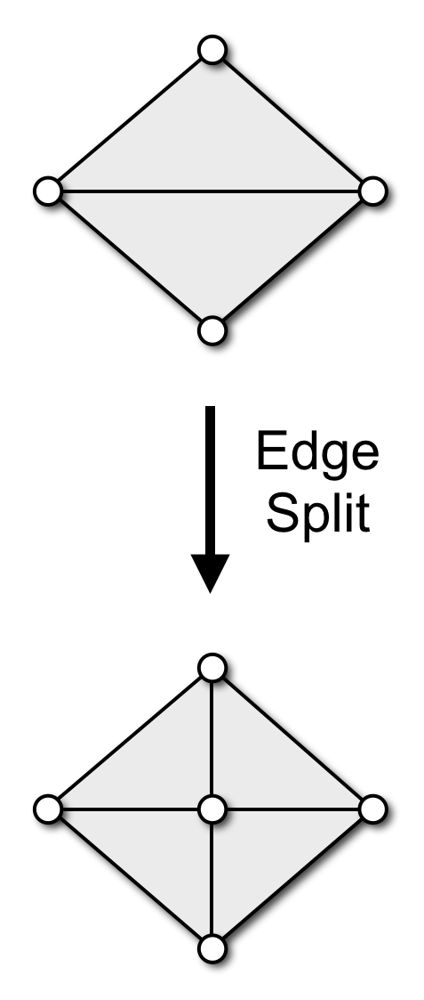
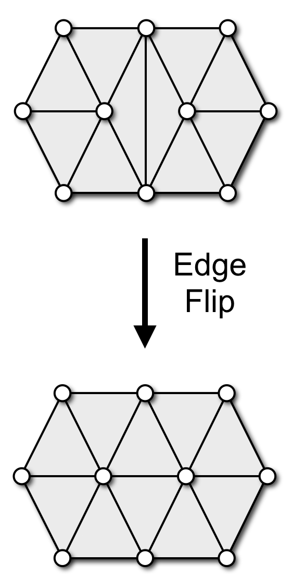

for Geometry Processing
Bielefeld University
Loop Subdivision Rules

Loop, Smooth Subdivision Surfaces Based on Triangles, M.S. thesis, 1987
Generalized Catmull-Clark Subdivision
- Subdivision scheme for arbitrary polygons

- Connect new face points to edge-vertex-edge triple
- Turns all polygon faces into quads
- Generates \(C^2\) continuous limit surfaces:
- \(C^1\) for extraordinary vertices (valence ≠ 4)
- \(C^2\) continuous everywhere else
DeRose et al, Subdivision Surfaces in Character Animation, SIGGRAPH 1998
Catmull-Clark Rules

\[\vec{f} = \frac{1}{n} \sum_{i=1}^n \vec{v}_i\]
\[\vec{e} = \frac{1}{4} \left(\vec{v}_1 + \vec{v}_2 + \vec{f}_1 + \vec{f}_2\right)\]

\[ \vec{v} = \frac{k-2}{k} \vec{v} + \frac{1}{k^2} \sum_{i=1}^k \vec{v}_i + \frac{1}{k^2} \sum_{i=1}^k \vec{f}_i \]
DeRose et al, Subdivision Surfaces in Character Animation, SIGGRAPH 1998
Cotan Laplace Discretization
\[ \laplace \vec{x}\of{v_i} \;:=\; \frac{1}{2A\of{v_i}} \sum_{v_j \in \set{N}_1\of{v_i}} \left( \cot \alpha_{ij} + \cot \beta_{ij} \right) \left( \vec{x}\of{v_j} - \vec{x}\of{v_i} \right) \]
- Properties
- takes geometry and connectivity into account
- more accurate discretization
- can be derived through FEM

Uniform or Cotan Discretization?
- Uniform Laplacian is an inaccurate discretization
- Might be non-zero even for planar meshes
- Smoothes geometry and triangulation
- Might be desired for mesh regularization

Isotropic Triangle Remeshing

Local Remeshing Operators
  
  
Botsch & Kobbelt, A Remeshing Approach to Multiresolution Modeling, SGP 2004
Adaptive Remeshing
- Adapt edge length to local curvature
- Compute maximum principle curvature on reference mesh
- Determine local target edge length from max-curvature
- Adjust split & collapse criteria accordingly

Dunyach et al, Adaptive Remeshing for Real-Time Mesh Deformation, EG 2013